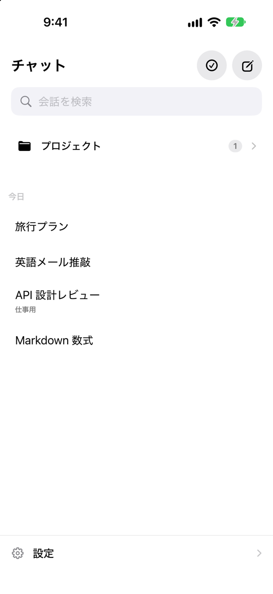

Parla amb un sol model
Respostes en temps real amb Markdown, ressaltat de codi, fórmules matemàtiques i imatges adjuntes. Edita, regenera i conserva diverses versions de la resposta.
La teva pròpia IA · iPhone & iPad
YamabikoChat és una aplicació de xat amb IA gratuïta per a iPhone i iPad. Connecta els serveis d'IA que ja fas servir —amb una clau API o un compte compatible— i després xateja amb un model, compara dos models costat a costat o deixa que dos models parlin entre ells.
Descàrrega gratuïta. Pagues directament al teu proveïdor d'IA pel que consumeixes.



D'un cop d'ull
Modes
Tria el mode que s'ajusta a la pregunta, no al revés.
Respostes en temps real amb Markdown, ressaltat de codi, fórmules matemàtiques i imatges adjuntes. Edita, regenera i conserva diverses versions de la resposta.
Envia el mateix missatge a dos models i llegeix les dues respostes costat a costat. Com funciona el mode Dual
Tria dos models, un tema i un nombre de torns, i mira com en parlen.
Deixa que el model delegui parts d'una petició a subagents —cadascun pot fer servir un model diferent— i segueix-ne el progrés al xat.
Funcions
Redacció, resums, traducció, codi i matemàtiques, amb les eines que necessita un assistent de veritat.

Per a qui
Guies
Descarrega YamabikoChat per a iPhone i iPad.